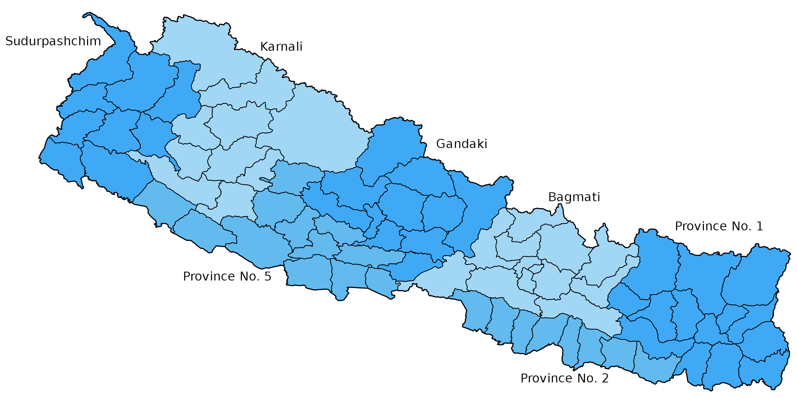
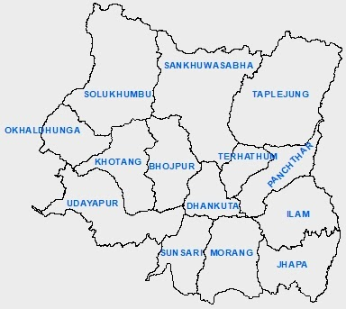
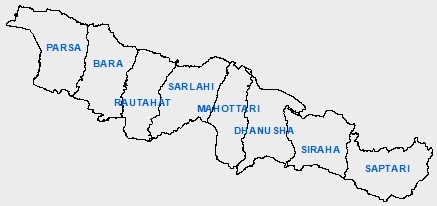
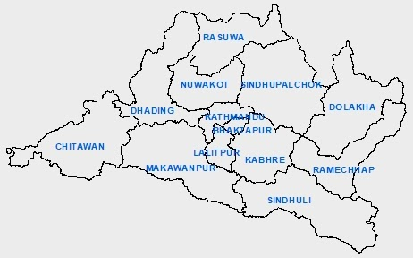
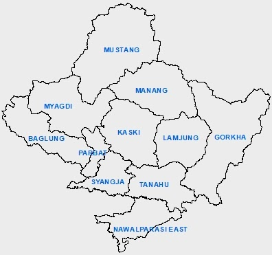
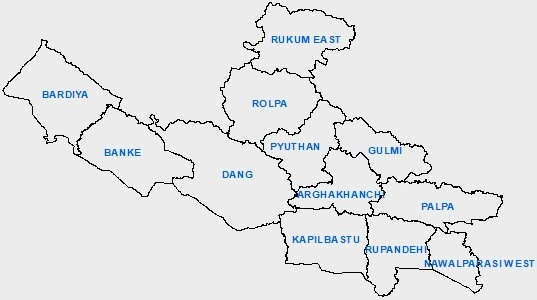
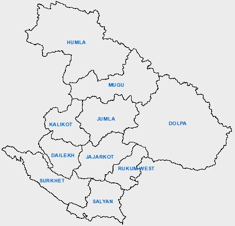
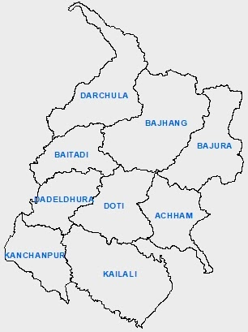

Home
Provinces of Nepal
The provinces of Nepal were formed on 20 September 2015 in accordance with Schedule 4 of the Constitution of Nepal. The seven provinces were formed by grouping the existing districts. The current system of seven provinces replaced an earlier system where Nepal was divided into 14 administrative zones which were grouped into five development regions.
The 7 provinces of Nepal are Province No 1, Province No 2: Madhesh Pradesh, Province No 3: Bagmati Pradesh, Province No 4: Gandaki Pradesh, Province No 5: Lumbini Pradesh, Province No 6: Karnali Pradesh and Province No 7: Sudur Pashchim Pradesh.

Province no 1

Province no 1 lies in the eastern region of Nepal. Its boundary touches both of the neighboring countries of Nepal i.e. India & China. It consists of 14 districts & 137 local levels. Mount Everest, the highest peak of the world is located in this state. Apart from this, it has other mountains like Kanchanjangha, Choyu, Makalu, Lotse, etc. Illam, Namche Bajar of Solukhumbu, Sagarmatha base camp, etc are the major tourist attractions of this region. The famous Pathivara temple of Taplejung district is also located in this state. The Puwa Khola hydroelectricity project & Thame hydroelectricity project are situated in this state. The major rivers of this province are Mechi, Arun, Tamor, Dudhkoshi, etc. The major lakes located in this province are namely Mai Pokhari, Jor Pokhari, Baraha Lake, etc.
Province No 2: Madhesh Pradesh

It is the smallest state of Nepal & only touches India in its boundary. It has 8 districts along with 136 local levels. The Janaki temple of Janakpur & Chhinamasta temple of Saptari district are the major religious places of this state. The well-known Bagamati irrigation project lies in this province. This is the only province of Nepal that does not contain any hydroelectricity project. The biggest river of Nepal, the Saptakoshi river flows in this region.
Province No 3: Bagmati Pradesh

It is a relatively more developed & well-infrastructured province of Nepal. It has its border connected to both India & China. The capital city of the country, Kathmandu, is situated in this province & the provincial capital is Hetauda. Kathmandu city is also known as the city of temples. The Pashupatinath Temple, Krishna temple of Patan, Swyambhunath, Bouddhanath, Changunarayan, Gosaikunda, Kalinchowk Bhagwati, Manakamana temple, Dakshinkali temple, etc are the major religious places of this state. There are other well-known tourist attractions as well. They are namely Patan, Bhaktapur, Nagarkot, Chovar, Dhulikhel, Chitwan National Park, Langtang National Park, Shivapuri Nagarjun National Park, Chandragiri hills, Annapurna base camp trekking, etc. This province consists of 13 districts & 119 local levels.
Province No 4: Gandaki Pradesh

Gandaki Province is situated in between Province no 5 & Bagmati Province touching both of the neighboring countries at its boundary. It consists of 11 districts along with 85 local levels. The Pokhara city, also called tourists paradise, is located at the heart of this state. The heavenly Pokhara city, Phewa Lake, Devi's Fall, Mahendra Cave, International Mountain Museum, Annapurna Mountain, Machapuchre Mountain, Tilicho Lake, Upper Mustang, etc are the major tourist attractions of this state. Kaligandaki, Budigandaki, Marsyandi, Modi, Seti, Aandhikhola etc are the major rivers flowing in this state.
Province No 5: Lumbini Pradesh

Province No 5 is one of the 7 provinces established by the present constitution of Nepal that contains 6 districts in the Terai region and the remaining 6 districts in the mountainous region out of a total of 12 districts within its territory. It only touches India at its boundary. Lumbini, the birthplace of Lord Gautam Buddha is situated in this state. The largest valley of Asia i.e. the Dang valley lies in this region. Lumbini, Bardiya National Park, Banke National Park, Blackbuck Conservation area, etc are the major tourist attractions of this province.
Province No 6: Karnali Pradesh

It is the largest state of Nepal that only touches China in the North at its boundary. It has 10 districts & 79 local levels. Humla Karnali, Mugu Karnali, Thulo Bheri, Sano Bheri, Budiganga, Setiganga, Tila, etc are the major rivers of this region. Rara lake, Shey Phoksundo lake, Syarpu lake, Jagadulla lake, Bulbule lake, etc are the well-known lakes of this state. Rara National Park, Shey Phoksundo National Park, Kankrebihar, etc are well-known sites for tourists attraction in this region.
Province No 7: Sudur Pashchim Pradesh

It is situated at the western end of Nepal & touches both India and China at its boundary. It consists of 9 districts & 88 local levels. Kailali, Tikapur, Mahendranagar, Dhangadhi, etc are the main cities of this state. Khaptad National Park, Shuklaphata National Park, Naini Lake, Jhilamila Lake, Ghodaghodi Lake, Dodhara Chadhani bridge, Karnali bridge, Tikapur Park, Lipulekh, Limpiyadhura, Kalapani, etc are the major tourist destinations of this region. The Mahakali river flows in this state.